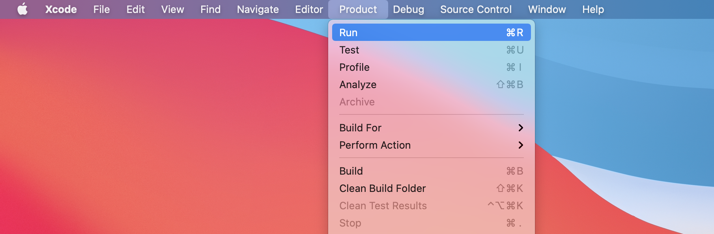
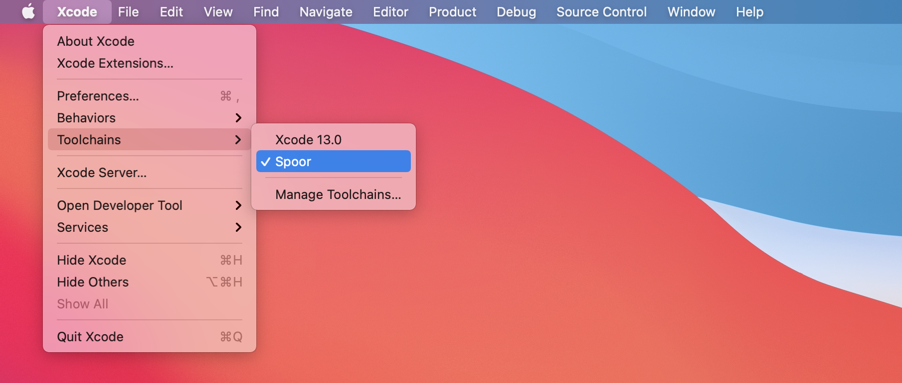
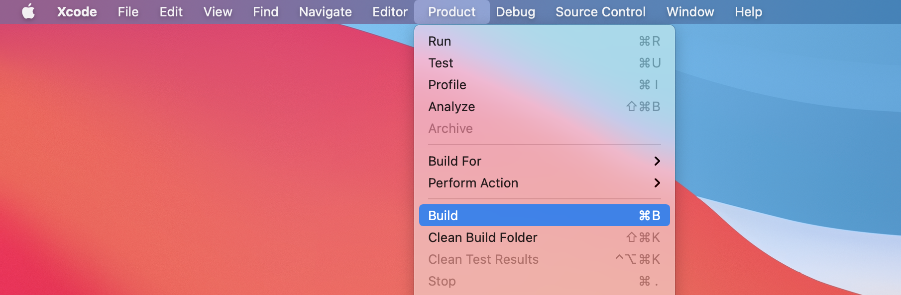
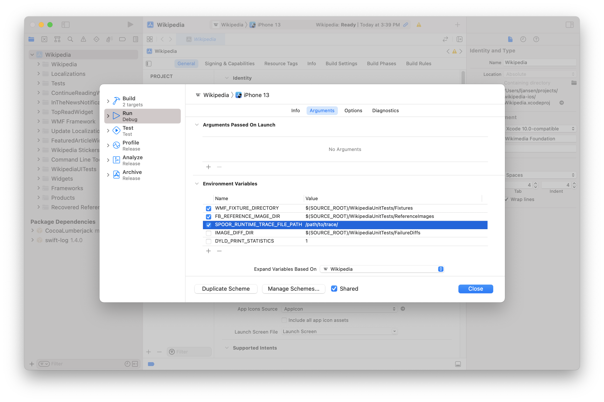
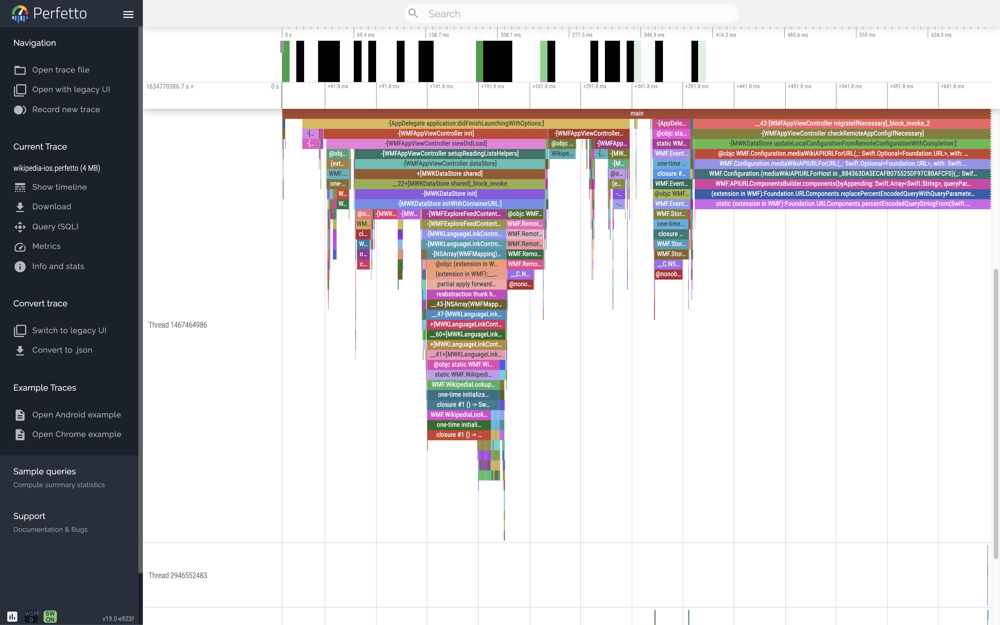

Wikipedia iOS
This tutorial uses Spoor to instrument Wikipedia's iOS app.
You'll learn Spoor's pipeline to automatically inject instrumentation into your source code, build and run your Spoor-instrumented program, symbolize the trace, and visualize and analyze your symbolized trace using Perfetto.
0. Prerequisites
0.1 Setup and dependencies
MicrosoftSpoor.xctoolchain: Spoor's Xcode toolchainspoor: Postprocessing tool- Xcode
Version
This tutorial uses the following tools. Your mileage may vary with newer or older versions.
MicrosoftSpoor.xctoolchain
0.0.0
Xcode
xcodebuild -version
Xcode 13.3
Build version 13E113
spoor
spoor --version
spoor 0.0.0
0.2 Download the code
git clone \
--branch releases/6.8.2 \
--depth 1 \
git@github.com:wikimedia/wikipedia-ios.git
git clone \
--branch releases/6.8.2 \
--depth 1 \
https://github.com/wikimedia/wikipedia-ios.git
curl \
--location \
--output wikipedia-ios.tar.gz \
https://github.com/wikimedia/wikipedia-ios/archive/refs/tags/releases/6.8.2.tar.gz &&
tar -xf wikipedia-ios.tar.gz &&
mv wikipedia-ios-releases-6.8.2 wikipedia-ios
cd wikipedia-ios
Version
This tutorial is based on Wikipedia iOS version 6.8.2. Your mileage may vary with newer or older versions.
Sanity test
Build and run the (uninstrumented) app to make sure that everything works as expected.
A clean build takes around four minutes (depending on how baller your computer is).
open Wikipedia.xcodeproj
Build and run: Product > Run (⌘R).

xcodebuild build \
-project Wikipedia.xcodeproj \
-scheme Wikipedia \
-configuration Debug \
-sdk iphonesimulator \
-arch x86_64
open -a Simulator.app
xcrun simctl \
install \
booted \
~/Library/Developer/Xcode/DerivedData/Wikipedia-xxxxxxxxxxxxxxxxxxxxxxxxxxxx/Build/Products/Debug-iphonesimulator/Wikipedia.app
xcrun simctl launch booted org.wikimedia.wikipedia
The app launches in the iOS Simulator.
1. Instrument the app
Select Spoor from Xcode's toolchains list: Xcode > Toolchains > Spoor.

Build: Product > Build (⌘B).

xcodebuild build \
-project Wikipedia.xcodeproj \
-scheme Wikipedia \
-configuration Debug \
-sdk iphonesimulator \
-arch x86_64 \
-toolchain Spoor
Spoor generates a .spoor_symbols file next to each object file.
find ~/Library/Developer/Xcode/DerivedData/Wikipedia-xxxxxxxxxxxxxxxxxxxxxxxxxxxx \
-name "*.spoor_symbols"
/Users/you/Library/Developer/Xcode/DerivedData/Wikipedia-xxxxxxxxxxxxxxxxxxxxxxxxxxxx/Build/Intermediates.noindex/Wikipedia.build/Debug-iphonesimulator/WMF.build/Objects-normal/x86_64/NavigationState.spoor_symbols
/Users/you/Library/Developer/Xcode/DerivedData/Wikipedia-xxxxxxxxxxxxxxxxxxxxxxxxxxxx/Build/Intermediates.noindex/Wikipedia.build/Debug-iphonesimulator/WMF.build/Objects-normal/x86_64/NSDate+WMFRelativeDate.spoor_symbols
/Users/you/Library/Developer/Xcode/DerivedData/Wikipedia-xxxxxxxxxxxxxxxxxxxxxxxxxxxx/Build/Intermediates.noindex/Wikipedia.build/Debug-iphonesimulator/WMF.build/Objects-normal/x86_64/CIContext+WMFImageProcessing.spoor_symbols
/Users/you/Library/Developer/Xcode/DerivedData/Wikipedia-xxxxxxxxxxxxxxxxxxxxxxxxxxxx/Build/Intermediates.noindex/Wikipedia.build/Debug-iphonesimulator/WMF.build/Objects-normal/x86_64/NSError+WMFExtensions.spoor_symbols
/Users/you/Library/Developer/Xcode/DerivedData/Wikipedia-xxxxxxxxxxxxxxxxxxxxxxxxxxxx/Build/Intermediates.noindex/Wikipedia.build/Debug-iphonesimulator/WMF.build/Objects-normal/x86_64/CacheGroup+CoreDataProperties.spoor_symbols
...
2. Run with instrumentation
Create a directory to hold the trace files and configure Spoor's runtime to save the traces in that path.
mkdir trace
Configure Wikipedia's scheme with a run action environment variable that
sets the trace file output path: Wikipedia > Edit Scheme...
| Key | Value |
|---|---|
| SPOOR_RUNTIME_TRACE_FILE_PATH | /path/to/trace/ |

Run: Product > Run (⌘R).
Appling environment variables
Environment variables are only applied when launching the app from Xcode (i.e., not when tapping the app's icon on the homescreen).
Install the instrumented build.
xcrun simctl \
install \
booted \
~/Library/Developer/Xcode/DerivedData/Wikipedia-xxxxxxxxxxxxxxxxxxxxxxxxxxxx/Build/Products/Debug-iphonesimulator/Wikipedia.app
Launch the app with a SPOOR_RUNTIME_TRACE_FILE_PATH environment variable
configuration.
SIMCTL_CHILD_SPOOR_RUNTIME_TRACE_FILE_PATH="/path/to/trace/" xcrun simctl \
launch \
booted \
org.wikimedia.wikipedia
Spoor's runtime emits trace files in the trace folder configured above.
ls trace
xxxxxxxxxxxxxxxx-xxxxxxxxxxxxxxxx-xxxxxxxxxxxxxxxx.spoor_trace
...
3. Process and analyze the trace
Finally, parse and symbolize the trace data to view it in Perfetto's trace viewer.
3.1 Parse and symbolize the trace
Use spoor, Spoor's postprocessing tool, to parse the .spoor_trace files in
your trace folder, symbolize the trace with the spoor_symbols files in
DerivedData, and output a Perfetto-compatible trace.
spoor \
/path/to/trace/ \
~/Library/Developer/Xcode/DerivedData/Wikipedia-xxxxxxxxxxxxxxxxxxxxxxxxxxxx \
--output_file=wikipedia-ios.perfetto
3.2 Visualize the trace
Open wikipedia-ios.perfetto in ui.perfetto.dev, Perfetto's
trace viewer.
The flame graph timeline visualization shows the stack trace of the app's boot over time.
